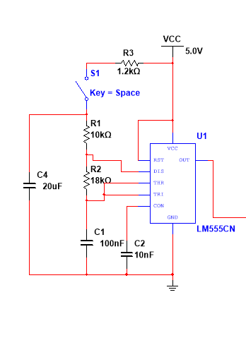
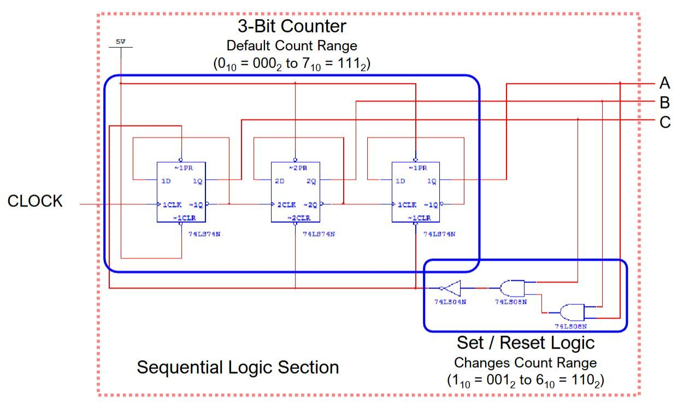
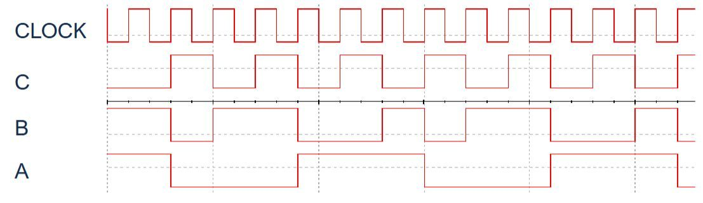
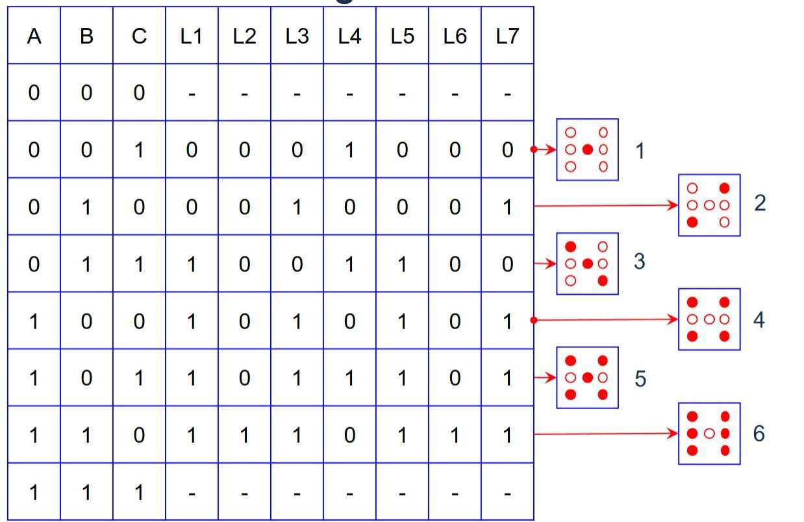
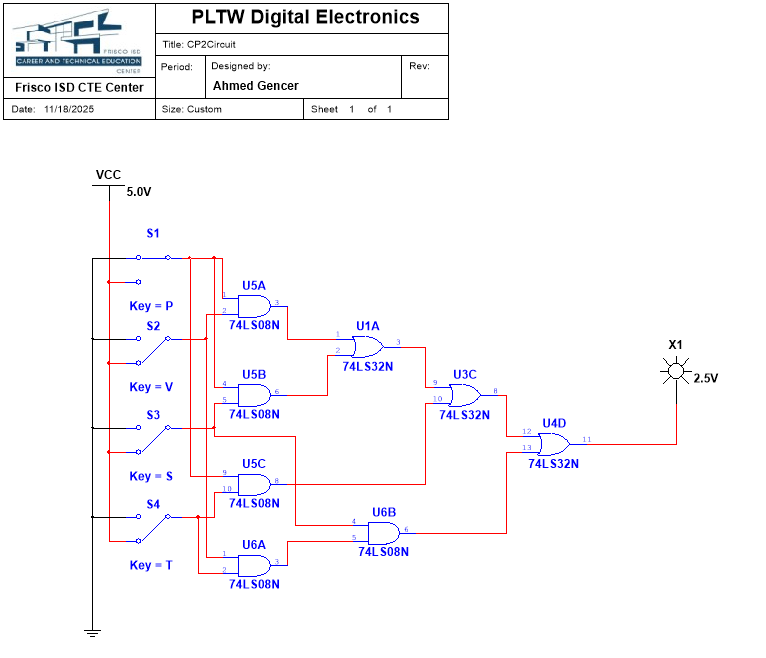
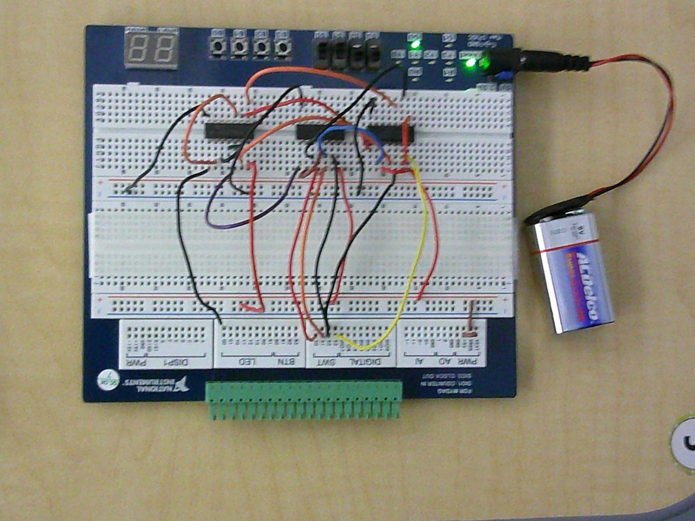
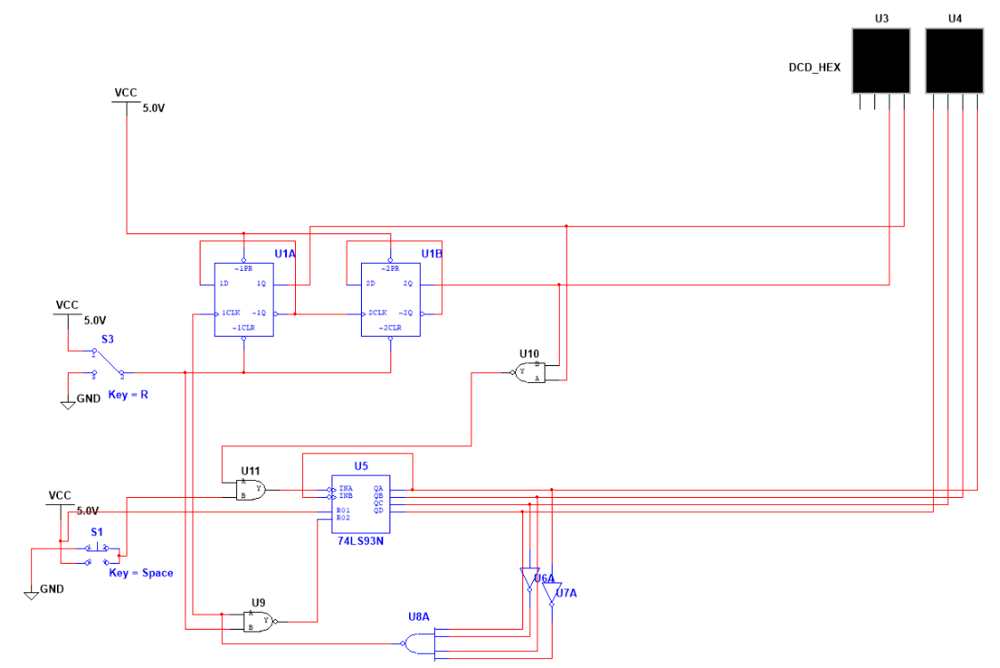
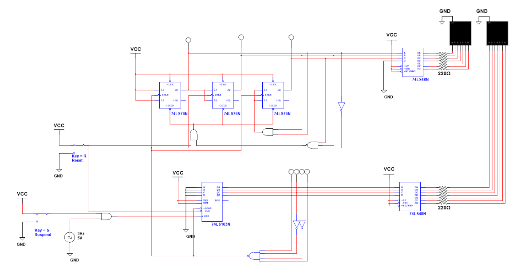
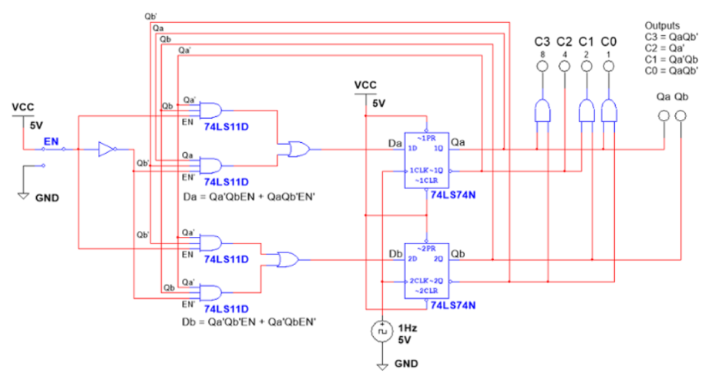
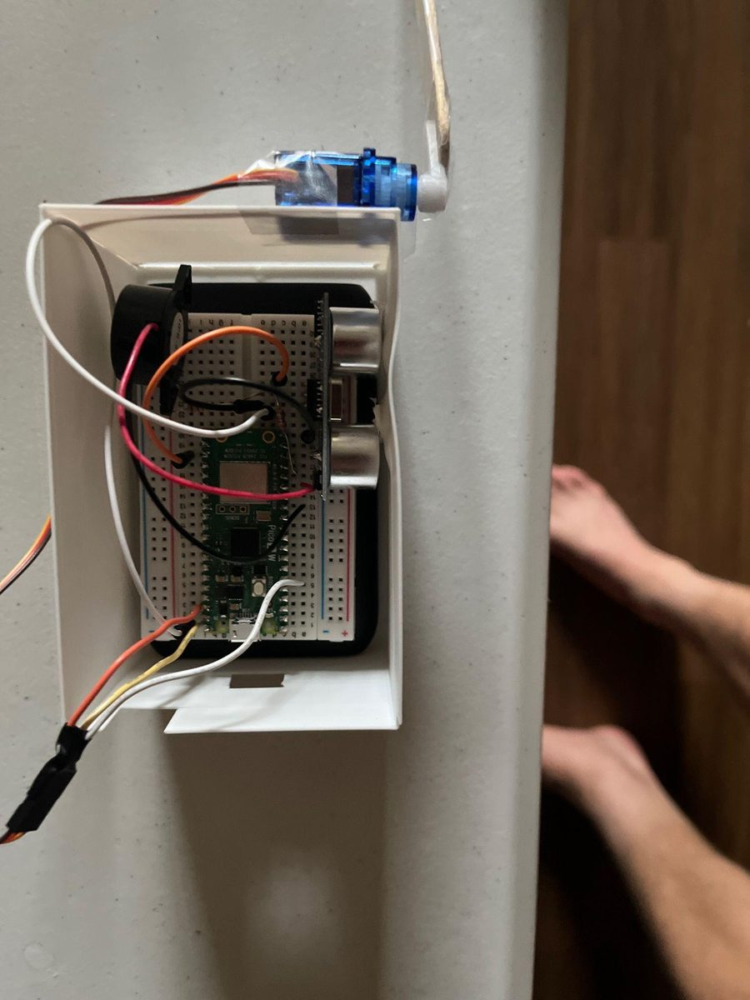

Digital Electronics
Combinational and sequential logic, each taken from problem statement to truth table, K-map and Boolean simplification, then a gate-level schematic in NI Multisim. Some were breadboarded or soldered.
Random number generator
An LM555 astable clock (R1 = 10 kΩ, R2 = 18 kΩ; I measured a period of about 15 ms) drives a 3-bit counter built from 74LS74 D flip-flops. Set/reset logic limits the count to 1–6. AND, OR, and NOT gates decode the count into a 7-LED die face; the LEDs are driven through the logic, not wired straight to the clock. A user switch disturbs the clock timing, so when it stops depends on the person, not the circuit.





Takeaway: next time I'd fully understand the 555 circuit before wiring; the logic didn't click for me until near the end.
Majority vote
A board of four (President, Vice-president, Secretary, Treasurer) votes. A majority passes the decision, and on a 2–2 tie the president's vote decides. From the 16-row truth table and a K-map:
D = PV + PS + PT + VST| Simplified AOI | NAND-only | NOR-only | |
|---|---|---|---|
| Gates | 8 | 11 | 16 |
| ICs | 3 | 3 | 4 |
| Cost per circuit | $2.90 | $3.41 | $4.96 |
| Max propagation delay | 0.4 ns | 0.6 ns | 0.7 ns |
I chose the AOI version: cheapest and fastest.


Seven-segment decoder
Logic that shows a fixed multi-digit sequence on a seven-segment display, one character per input state (000–111), using 3-input gates only. I made a separate K-map for each of the 7 segments, reused logic where characters repeated, converted parts to NAND-only and NOR-only forms, and built segments with current-limiting resistors in TinkerCAD.
"Now Serving" counter (00–30)
A deli-counter display: Next advances the count by one, Reset returns it to 00, and the count stops at 30. A 74LS93 counts the ones digit; two D flip-flops handle the tens digit; gating logic resets the ones digit at 10 and blocks Next at 30. I debugged it by placing indicator lights on intermediate wires.

60-second timer
Counts 00–59 and rolls over. A 74LS163 synchronous counter (mod-10) for the ones digit is cascaded into three 74LS76 JK flip-flops (mod-6) for the tens. Two 74LS48 BCD-to-seven-segment decoders drive the displays through 220 Ω resistors. Reset (R) holds the count at zero; Suspend (S) pauses it.

5-3-2 state machine
Each press of a pushbutton (EN) advances the display through 5 → 3 → 2 and back to 5. Two D flip-flops hold the state. I derived the next-state logic from the state and excitation tables:
Da = Qa'·Qb·EN + Qa·Qb'·EN'
Db = Qa'·Qb'·EN + Qa'·Qb·EN'Output gates decode the state into BCD outputs C3–C0 (weights 8/4/2/1).

Capstone: attachable distance sensor
A short team project: a proximity alert for older cars without built-in sensors. A Pico 2 W reads an HC-SR04 ultrasonic sensor. When an object comes closer than a threshold, the Pico sounds a piezo buzzer, turns a servo 90°, and sends a BLE alert to a phone app. Closing the app silences the buzzer and resets the servo.
Team: Pietro Moreira (code and app), Juan Salcedo (board assembly), and me (soldering and the protective enclosure).
